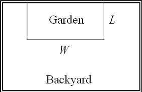
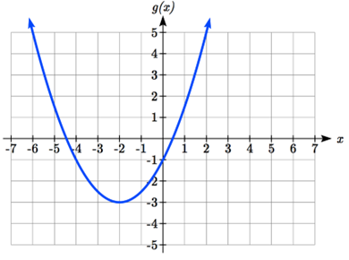
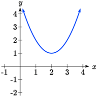
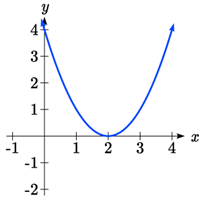
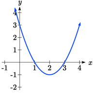

In this section, we will explore the family of 2nd degree polynomials, the quadratic functions. While they share many characteristics of polynomials in general, the calculations involved in working with quadratics is typically a little simpler, which makes them a good place to start our exploration of short run behavior. In addition, quadratics commonly arise from problems involving area and projectile motion, providing some interesting applications.
Definition3.2.1.Important Topics of this Section.
Quadratic functions
Standard form
Transformation form/Vertex form
Vertex as a maximum / Vertex as a minimum
Short run behavior
Vertex / Horizontal and Vertical intercepts
Quadratic formula
Example3.2.2.
A backyard farmer wants to enclose a rectangular space for a new garden. She has purchased 80 feet of wire fencing to enclose 3 sides, and will put the 4th side against the backyard fence. Find a formula for the area enclosed by the fence if the sides of fencing perpendicular to the existing fence have length \(L\text{.}\)
In a scenario like this involving geometry, it is often helpful to draw a picture. It might also be helpful to introduce a temporary variable, \(W\text{,}\) to represent the side of fencing parallel to the 4th side or backyard fence.

Figure3.2.3.A rectangular garden
Since we know we only have 80 feet of fence available, we know that \(L+W+L=80\text{,}\) or more simply, \(2L+W=80\text{.}\) This allows us to represent the width, \(W\text{,}\) in terms of \(L\text{:}\)\(W=80-2L\text{.}\)
Now we are ready to write an equation for the area the fence encloses. We know the area of a rectangle is length multiplied by width, so \(A=LW=L(80-2L).\)
Letting \(f\) be the function that calculates the area within the fence in terms of the length of the enclosure,
\(f(L)=80L-2L^{2}.\)
This formula represents the area of the fence in terms of the variable length \(L\text{.}\)
Subsection3.2.2Short run Behavior: Vertex
We now explore the interesting features of the graphs of quadratics. In addition to intercepts, quadratics have an interesting feature where they change direction, called the vertex. You probably noticed that all quadratics are related to transformations of the basic quadratic function \(f(x)=x^{2}\text{.}\)
Example3.2.4.
Write an equation for the quadratic graphed below as a transformation of \(f(x)=x^{2}\text{,}\) then expand the formula and simplify terms to write the equation in standard polynomial form.

Figure3.2.5.Graph of \(g(x)\)
We can see the graph is the basic quadratic shifted to the left 2 and down 3, giving a formula in the form \(g(x)=a(x+2)^{2}-3\text{.}\) By plugging in a point that falls on the grid, such as \((0,-1)\text{,}\) we can solve for the stretch factor: \(-1=a(0+2)^{2}-3,\)
\(2=4a,\)
\(a=\dfrac{1}{2}.\)
Written as a transformation, the equation for this formula is \(g(x)=\dfrac{1}{2}(x+2)^{2}-3\text{.}\) To write this in standard polynomial form, we can expand the formula and simplify terms:
The standard form of a quadratic function is \(f(x)=ax^{2}+bx+c.\) The vertex form of a quadratic function is \(f(x)=a(x-h)^{2}+k.\) The vertex of the quadratic function is located at (h, k), where h and k are the numbers in the vertex form of the function.
In the previous example, we saw that it is possible to rewrite a quadratic function given in vertex form and rewrite it in standard form by expanding the formula. It would be useful to reverse this process, since the vertex form reveals the vertex.
Expanding out the general vertex form of a quadratic gives:
This should be equal to the standard form of the quadratic: \(ax^{2}-2ahx+ah^{2}+k=ax^{2}+bx+c.\)
The second degree terms are already equal. For the linear terms to be equal, the coefficients must be equal: \(-2ah=b\text{,}\) so \(h=\dfrac{-b}{2a}.\)
This provides us a method to determine the horizontal shift of the quadratic from the standard form. We could likewise set the constant terms equal to find: \(ah^{2}+k=c\text{,}\) so \(k=c-ah^{2}=c-a(\dfrac{-b}{2a})^{2}=c-\dfrac{ab^2}{4a^2}=c-\dfrac{b^2}{4a}.\) In practice, though, it is usually easier to remember that \(k\) is the output value of the function when the input is \(h\text{,}\) so \(k=f(h)\text{.}\)
Definition3.2.7.Finding the Vertex of a Quadratic.
For a quadratic given in standard form, the vertex \((h, k)\) is located at: \(h=\dfrac{-b}{2a}\text{,}\)\(k=f(h)=f(\dfrac{-b}{2a}).\)
Example3.2.8.
Find the vertex of the quadratic \(f(x)=2x^{2}-6x+7\text{.}\) Rewrite the quadratic into vertex form.
The horizontal coordinate of the vertex will be at \(h=\dfrac{-b}{2a}=\dfrac{-(-6)}{2(2)}=\dfrac{6}{4}=\dfrac{3}{2}.\) The vertical coordinate of the vertex will be at \(f(\dfrac{3}{2})=2(\dfrac{3}{2})^{2}-6(\dfrac{3}{2})+7=\dfrac{5}{2}.\)
Rewriting into vertex form, the stretch factor will be the same as the \(a\) in the original quadratic. Using the vertex to determine the shifts, \(f(x)=2(x-\dfrac{3}{2})^{2}+\dfrac{5}{2}.\)
Checkpoint3.2.9.
Given the equation \(g(x)=13+x^{2}-6x\) write the equation in standard form and then in vertex form.
As an alternative to using a formula for finding the vertex, the equation can also be written into vertex form by completing the square. This process is most easily explained through example. In most cases, using the formula for finding the vertex will be quicker and easier than completing the square, but completing the square is a useful technique when faced with some other algebraic problems.
Example3.2.10.
Rewrite \(f(x)=2x^{2}-12x+14\) into vertex form by completing the square.
We start by factoring the leading coefficient from the quadratic and linear terms.
\begin{equation*}
2(x^{2}-6x)+14
\end{equation*}
Next, we are going to add something inside the parentheses so that the quadratic inside the parentheses becomes a perfect square. In other words, we are looking for values p and q so that \((x^{2}-6x+p)=(x-q)^{2}\text{.}\)
Notice that if multiplied out on the right, the middle term would be \(-2q\text{,}\) so \(q\) must be half of the middle term on the left; \(q = -3\text{.}\) In that case, \(p\) must be \((-3)2 = 9\text{.}\)\((x^{2}-6x+9)=(x-3)^{2}.\)
Now, we can’t just add 9 into the expression – that would change the value of the expression. In fact, adding 9 inside the parentheses actually adds 18 to the expression, since the 2 outside the parentheses will distribute. To keep the expression balanced, we can subtract 18. \(2(x^{2}-6x+9)+14-18.\)
Simplifying, we are left with vertex form. \(2(x-3)^{2}-4.\)
In addition to enabling us to more easily graph a quadratic written in standard form, finding the vertex serves another important purpose – it allows us to determine the maximum or minimum value of the function, depending on which way the graph opens.
Example3.2.11.
Returning to our backyard farmer from the beginning of the section, what dimensions should she make her garden to maximize the enclosed area?
Earlier we determined the area she could enclose with 80 feet of fencing on three sides was given by the equation \(f(L)=80L-2L^{2}\text{.}\) Notice that quadratic has been vertically reflected, since the coefficient on the squared term is negative, so the graph will open downwards, and the vertex will be a maximum value for the area.
In finding the vertex, we take care since the equation is not written in standard polynomial form with decreasing powers. But we know that \(a\) is the coefficient on the squared term, so \(a = -2\text{,}\)\(b = 80\text{,}\) and \(c = 0\text{.}\) Finding the vertex: \(h=\dfrac{-80}{2(-2)}=20\text{,}\)\(k=f(20)=80(20)-2(20)^{2}=800.\)
The maximum value of the function is an area of 800 square feet, which occurs when \(L = 20\) feet. When the shorter sides are 20 feet, that leaves 40 feet of fencing for the longer side. To maximize the area, she should enclose the garden such that the two shorter sides have length 20 feet, and the longer side parallel to the existing fence has length 40 feet.
Example3.2.12.
A local newspaper currently has 84,000 subscribers, at a quarterly charge of $30. Market research has suggested that if they raised the price to $32, they would lose 5,000 subscribers. Assuming that subscriptions are linearly related to the price, what price should the newspaper charge for a quarterly subscription to maximize their revenue?
Revenue is the amount of money a company brings in. In this case, the revenue can be found by multiplying the charge per subscription times the number of subscribers. We can introduce variables, \(C\) for charge per subscription and \(S\) for the number subscribers, giving us the equation \(\text{Revenue}= CS.\)
Since the number of subscribers changes with the price, we need to find a relationship between the variables. We know that currently \(S = 84,000\) and \(C = 30\text{,}\) and that if they raise the price to $32 they would lose 5,000 subscribers, giving a second pair of values, \(C = 32\) and \(S = 79,000\text{.}\) From this we can find a linear equation relating the two quantities. Treating \(C\) as the input and \(S\) as the output, the equation will have form \(S=mC+b\text{.}\) The slope will be \(m=\dfrac{79,000-84,000}{32-30}=\dfrac{-5,000}{2}=-2,500.\)
This tells us the paper will lose 2,500 subscribers for each dollar they raise the price. We can then solve for the vertical intercept. Starting with what we know: \(S=-2500C+b.\) Plugging in the point \(S = 84,000\) and \(C = 30\) gets us \(84,000=-2500(30)+b.\) Solving this for \(b\) gets \(b=159,000.\)
This gives us the linear equation \(S=-2,500C+159,000\) relating cost and subscribers. We now return to our revenue equation. Since \(\text{Revenue}=CS,\) we substitute the equation for \(S\) from above to get \(\text{Revenue}=C(-2,500C+159,000).\) Expanding this equation gives \(\text{Revenue}=-2,500C^{2}+159,000C.\)
We now have a quadratic equation for revenue as a function of the subscription charge. To find the price that will maximize revenue for the newspaper, we can find the vertex: \(h=\dfrac{-159,000}{2(-2,500)}=31.8\)
The model tells us that the maximum revenue will occur if the newspaper charges $31.80 for a subscription. To find what the maximum revenue is, we can evaluate the revenue equation: \(\text{Maximum Revenue}= -2,500(31.8)^{2}+159,000(31.8)= \$2,528,100\)
Subsection3.2.3Short run Behavior: Intercepts
As with any function, we can find the vertical intercepts of a quadratic by evaluating the function at an input of zero, and we can find the horizontal intercepts by solving for when the output will be zero. Notice that depending upon the location of the graph, we might have zero, one, or two horizontal intercepts.

Figure3.2.13.A quadratic function with zero horizontal intercepts

Figure3.2.14.A quadratic function with one horizontal intercept

Figure3.2.15.A quadratic function with two horizontal intercepts
Example3.2.16.
Find the vertical and horizontal intercepts of the quadratic \(f(x)=3x^{2}+5x-2.\)
We can find the vertical intercept by evaluating the function at an input of zero: \(f(0)=3(0)^{2}+5(0)-2=-2,\) so the function \(f\) has a vertical intercept at \((0,-2).\)
For the horizontal intercepts, we solve for when the output will be zero. So we must solve the equation \(0=3x^{2}+5x-2.\)
In this case, the quadratic can be factored easily enough, providing the simplest method for solution \(0=(3x-1)(x+2).\) So the roots must occur when either \(0=3x-1\) or when \(0=x+2.\) The first equation is true when \(x=\dfrac{1}{3},\) and the second is true when \(x=-2.\) So, the function \(f\) has horisontal intercepts at \((\dfrac{1}{3},0)\) and \((-2,0)\text{.}\)
Notice that in the standard form of a quadratic, the constant term \(c\) reveals the vertical intercept of the graph.
Example3.2.17.
Find the horizontal intercepts of the quadratic \(f(x)=2x^{2}+4x-4.\)
Again we must solve for when the output will be zero \(0=2x^{2}+4x-4.\)
Since the quadratic is not easily factor-able in this case, we solve for the intercepts by first rewriting the quadratic into vertex form. \(h=\dfrac{-b}{2a}=\dfrac{-4}{2(2)}=-1\text{,}\)\(k=f(-1)=2(-1)^{2}+4(-1)-4=-6\text{.}\) So we can rewrite \(f\) in vertex form as \(f(x)=2(x+1)^{2}-6.\)
Now we can solve for when the output will be zero algebraically: \(0=2(x+1)^{2}-6,\) adding 6 to both sides yields \(6=2(x+1)^{2}.\) Dividing both sides by 2 gives \(3=(x+1)^{2}.\) Now, must notice that there are two possible solutions to this equation, when \(x+1=\sqrt{3}\) and when \(x+1=-\sqrt{3}.\) Solving each of these equations gives us the solutions \(x=-1+\sqrt{3}\) and \(x=-1-\sqrt{3}\text{.}\)
So, the graph has horizontal intercepts at \((-1-\sqrt{3},0)\) and \((-1+\sqrt{3},0)\text{.}\)
Checkpoint3.2.18.
Find the Vertical and Horizontal intercepts (if they exist) of the function \(g(x)=13+x^{2}-6x\text{.}\)
The process in the last example is done commonly enough that sometimes people find it easier to solve the problem once in general and remember the formula for the result, rather than repeating the process each time. Based on our previous work we showed that any quadratic in standard form can be written into transformation form as: \(f(x)=a(x+\dfrac{b}{2a})^{2}+c-\dfrac{b^2}{4a}\text{.}\)
Solving for the horizontal intercepts using this general equation gives:
For a quadratic function given in standard form \(f(x)=ax^{2}+bx+c\text{,}\) the quadratic formula gives the horizontal intercepts of the graph of this function. The horizontal intercepts occur when:
A ball is thrown upwards from the top of a 40-foot-tall building at a speed of 80 feet per second. The ball’s height above ground can be modeled by the equation \(f(t)=-16t^{2}+80t+40\text{.}\) What is the maximum height of the ball? When does the ball hit the ground?
To find the maximum height of the ball, we would need to know the vertex of the quadratic function. \(h=\dfrac{-80}{2(-16)}=\dfrac{80}{32}=\dfrac{5}{2}\text{,}\)\(k=f(\dfrac{5}{2})=-16(\dfrac{5}{2})^{2}+80(\dfrac{5}{2})+40=140.\)
The ball reaches a maximum height of 140 feet after 2.5 seconds. To find when the ball hits the ground, we need to determine when the height is zero – when \(f(t) = 0\text{.}\) While we could do this using the vertex form of the quadratic, we can also use the quadratic formula. \(f(t)=0\) when \(t=\dfrac{-80\pm \sqrt{80^{2}-4(-16)(40)}}{2(-16)}=\dfrac{-80\pm \sqrt{8960}}{-32}.\)
Since the square root does not simplify nicely, we can use a calculator to approximate the values of the solutions: \(t=\dfrac{-80-\sqrt{8960}}{-32}\approx 5.458\) or \(t=\dfrac{-80+\sqrt{8960}}{-32}\approx -0.458\text{.}\)
The second answer is outside the reasonable domain of our model (since it represents a time before the ball was thrown), so we conclude the ball will hit the ground after about 5.458 seconds.
Checkpoint3.2.21.
For these two equations determine if the vertex will be a maximum value or a minimum value.
\(\displaystyle g(x)=-8x+x^{2}+7\)
\(\displaystyle g(x)=-3(3-x)^{2}+2\)
Checkpoint3.2.22.
[Exercise Answers]
\(g(x)=x^{2}-6x+13\) in Standard form; Finding the vertex, \(h=\dfrac{-(-6)}{2(1)}=3\text{.}\)\(k=g(3)=3^{2}-6(3)+13=4\text{.}\)\(g(x)=(x-3)^{2}+4\) in Vertex form.
Vertical intercept at \((0, 13)\text{,}\) No horizontal intercepts since the vertex is above the \(x\)-axis and the graph opens upwards.
Vertex is a minimum value, since \(a > 0\) and the graph opens upwards.
Vertex is a maximum value, since \(a < 0\) and the graph opens downward.